2026
Learning local universes: Neural Cellular Automata as decentralized world models
Paradigms of Intelligence · Google Research
I am a PhD researcher at École Normale Supérieure in Paris, working at the intersection of deep learning and computational neuroscience, under the supervision of Yair Lakretz and Jean-Rémi King. I study how neural networks represent linguistic structure, with a focus on the geometry and dynamics of representations in large language models and self-supervised models.
My PhD is part of AI4theSciences / Marie Skłodowska-Curie Actions. In 2026, I joined Paradigms of Intelligence at Google Research as a Research Scientist Intern, where I worked on World Models and self-organized systems.
Previously, I completed an MSc in Biomedical Engineering at ETH Zürich and a BSc in Biomedical Engineering at URJC.
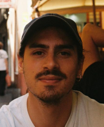
Paradigms of Intelligence · Google Research
Preprint
I grew up in Brussels and have since lived in Madrid, Zürich and Paris, with Salamanca always feeling like home. Music has been a constant across those places, and some albums have become inseparable from particular cities and moments.
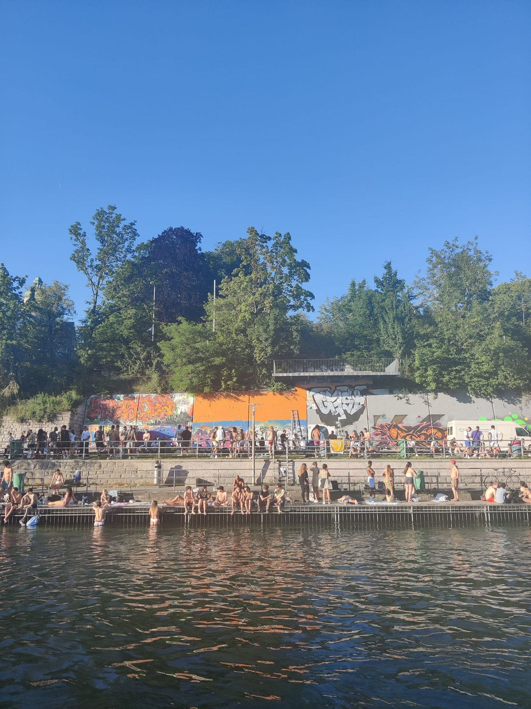
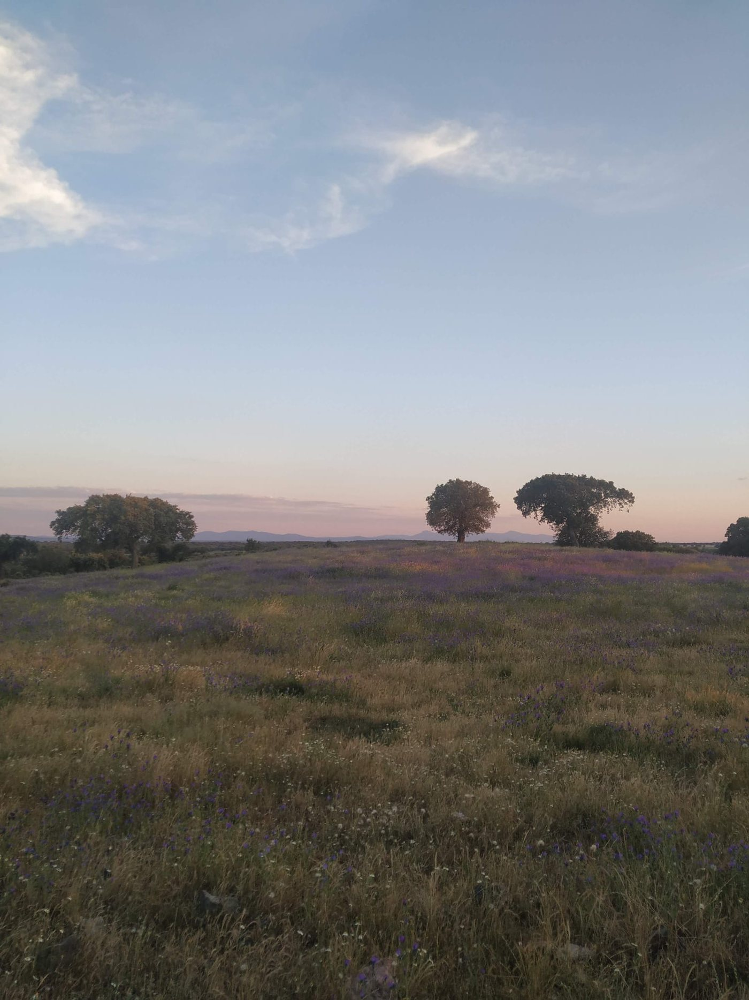
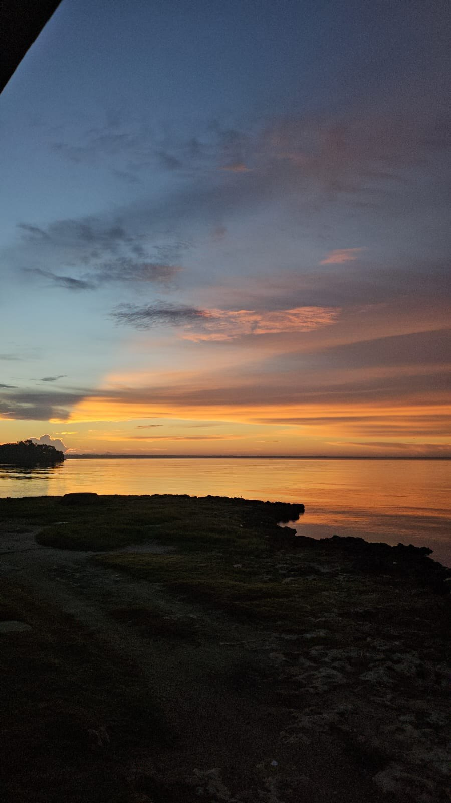
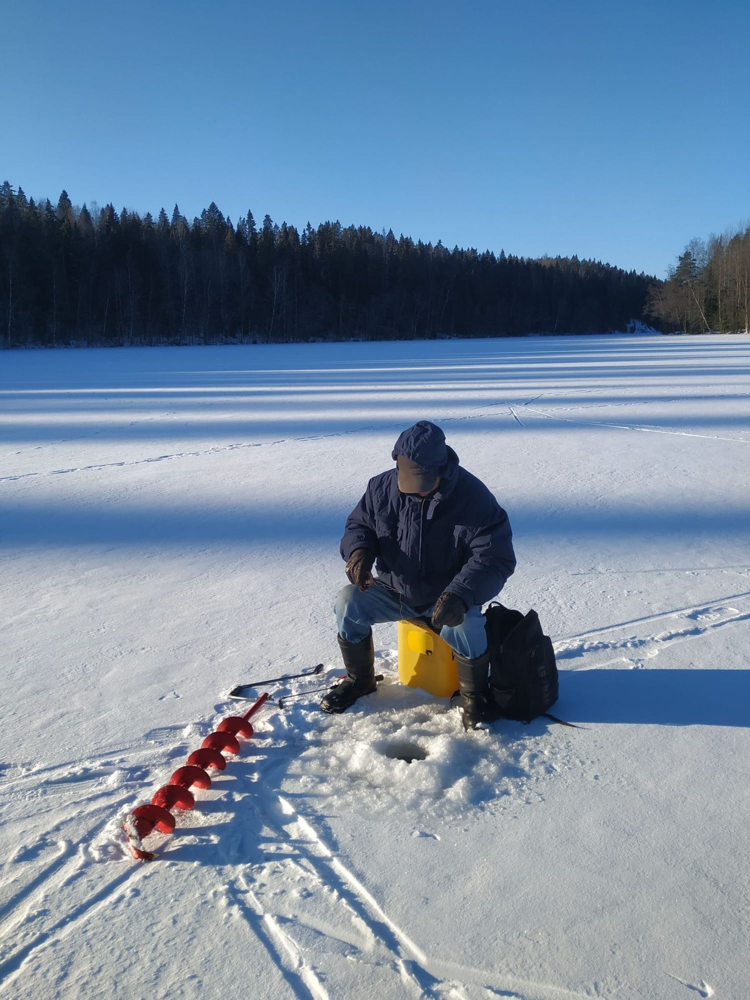
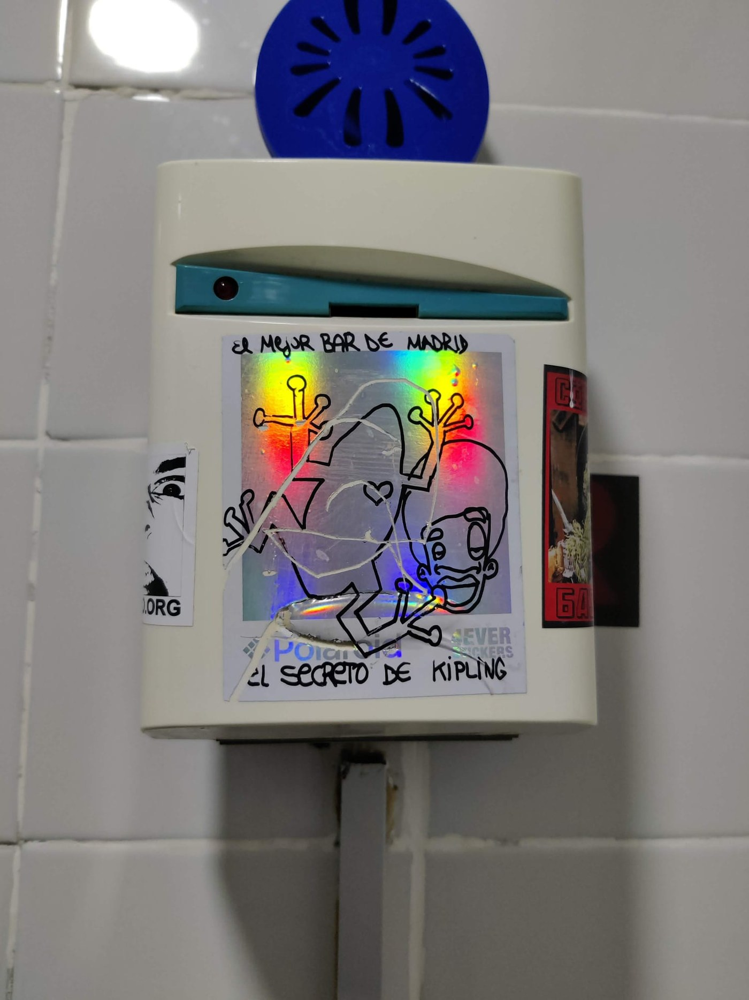
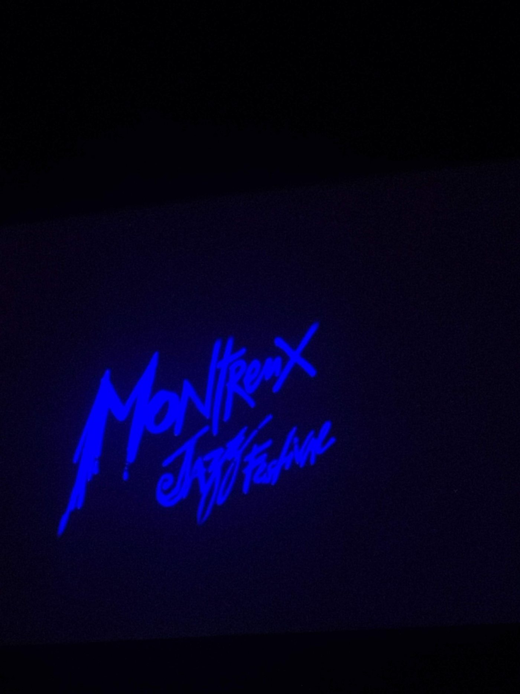
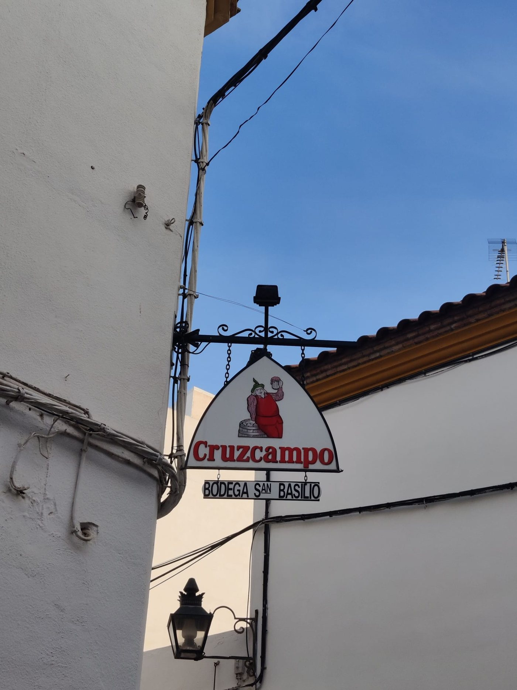
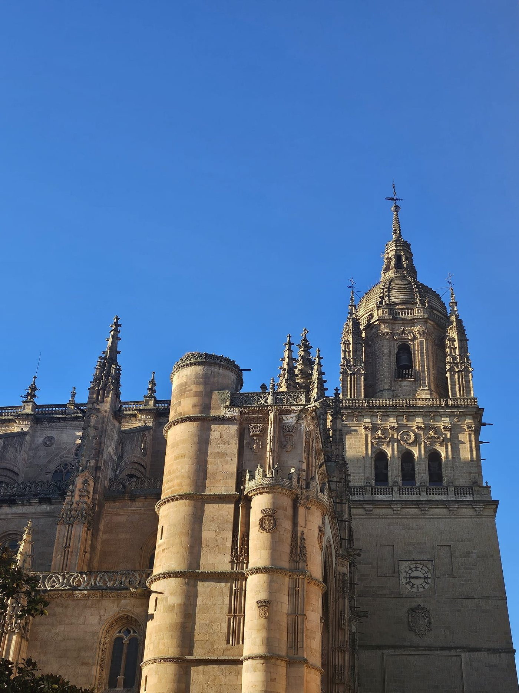
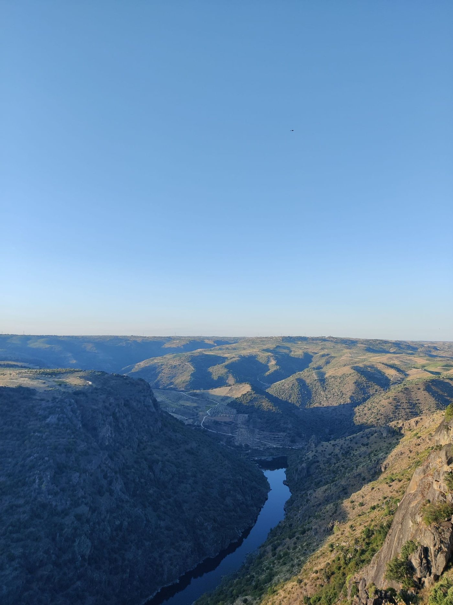
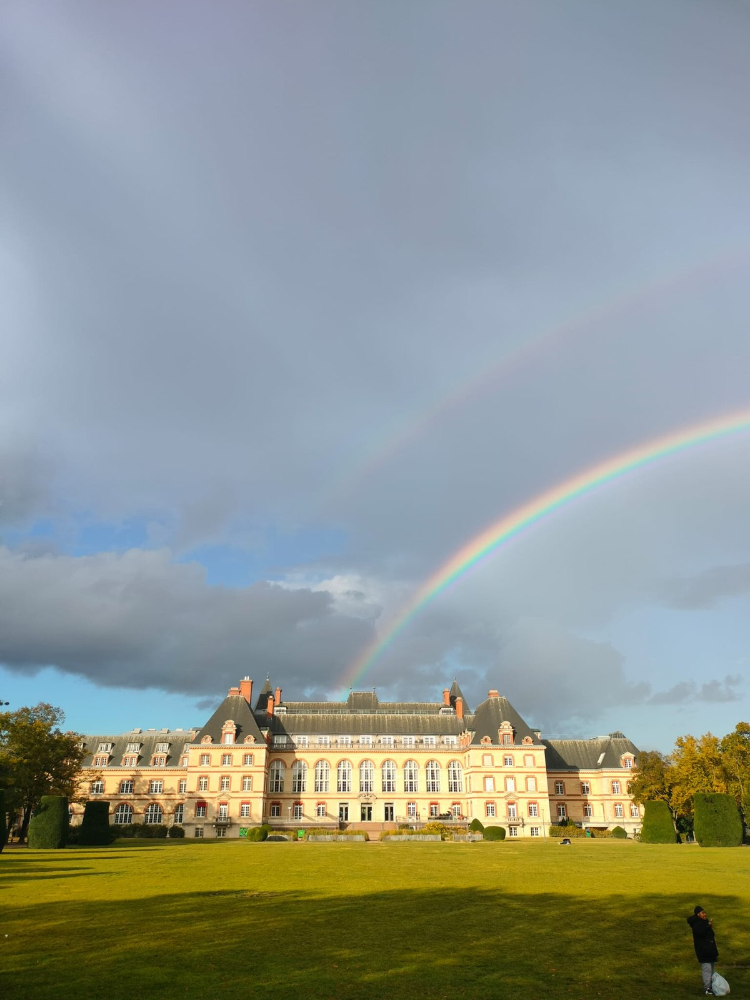
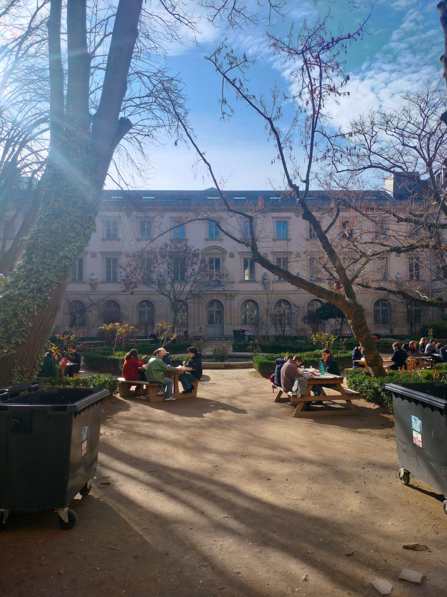
Salamanca · Brussels · Madrid · Zürich · Paris
an ongoing work in progress